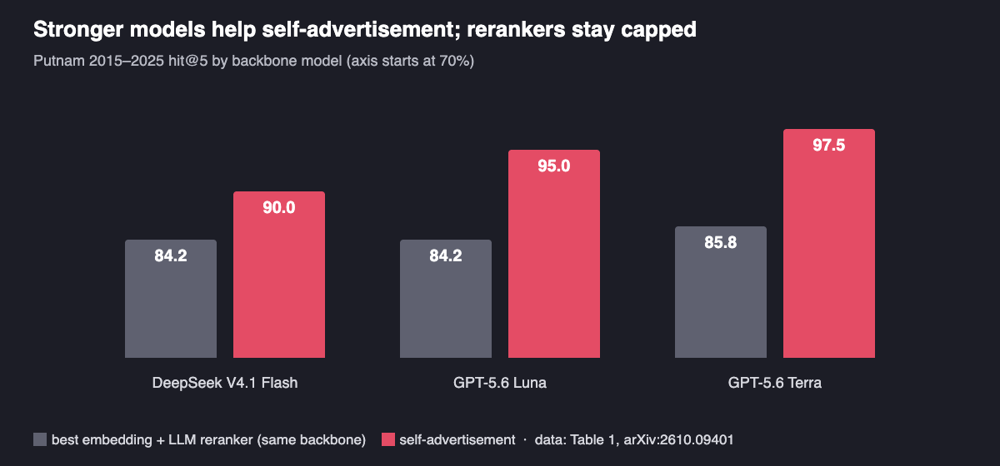

How Should an AI Theorem Prover Pick a Proof Method?
Ranking methods by how similar they look to a theorem misses many that would work. Asking each method how it would be used finds them.
By Xiaopeng Yuan and Haohan Wang · · About our 2026 arXiv preprint (arXiv:2610.09401)
Before an AI theorem prover writes a line of Lean, something has to decide which mathematical method to try: Cauchy–Schwarz or AM-GM, induction or the pigeonhole principle, the mean value theorem or a telescoping sum. Most LLM provers make that choice implicitly, by retrieving lemmas and past proofs that look similar to the goal. Our new paper, Let the Library Speak: Self-Advertised Method Selection for Formal Proving, argues that how a proof method looks is the wrong signal and tests a different one: ask every method in a library how it would be used on this theorem, and demote the ones that cannot say. On Putnam 2015–2025 problems, this puts an annotated method in the top five for 95.0% of problems, against 84.2% for the strongest embedding-plus-LLM-reranking baseline. The work is by Xiaopeng Yuan, Haibo Jin, Peng Kuang, Jerry Wang and Haohan Wang (University of Illinois Urbana-Champaign), Suijin Wang (Tsinghua University), Yanli Wang (Imperial College London) and Lijun Yu (Google).
Key findings
- In Let the Library Speak (arXiv 2026), letting each of 82 reusable proof methods propose its own use on a theorem placed an annotated method in the top-5 shortlist for 95.0% of 120 Putnam 2015–2025 problems with GPT-5.6 Luna, compared with 84.2% for the strongest embedding-plus-LLM-reranker baseline and 77.5% for the best embedding retriever alone.
- The gap grows with the model: across DeepSeek V4.1 Flash, GPT-5.6 Luna and GPT-5.6 Terra, self-advertisement's Putnam hit@5 rose from 90.0% to 95.0% to 97.5%, while the best reranker stayed at 84.2%, 84.2% and 85.8%, because a reranker cannot recover a method its similarity stage never retrieved.
- On 60 IMO ProofBench problems, self-advertisement reached 91.7% hit@5 versus 88.3% for the strongest reranker with GPT-5.6 Luna, and it had the highest recall@5 in all six backbone–benchmark settings tested by Yuan, Wang and colleagues at the University of Illinois Urbana-Champaign.
- Adding the top-ranked method to the AxProverBase Lean proof loop with 10 compilations per problem raised proved Putnam 2015–2025 problems from 5.8% to 12.5% and IMO ProofBench problems from 10.0% to 15.0%; most problems remained unsolved.
How do AI theorem provers choose a proof method today?
Mostly, they do not choose one explicitly. Current LLM provers generate Lean code, run the Lean checker, and revise in response to its errors. What they get to see beforehand comes from retrieval: premise selection supplies Mathlib lemmas that might be needed, semantic Mathlib search finds declarations that match a query, and proof retrieval offers worked examples of related problems. Each of these ranks candidates by how related they look to the goal, using word overlap (BM25, TF-IDF) or text embeddings, sometimes followed by an LLM that reorders the top few.
The paper's starting point is that relevance does not answer the question a prover actually faces. A method has prerequisites, a part of the goal it targets, an action it takes, and obligations it leaves to prove. Two methods can look equally related to a theorem while only one offers a step that can be taken. A retrieved inequality may need nonnegativity that has not been established; the method that works may come from a problem that looks nothing like this one. A suggestion such as “use induction” still leaves open what to induct on and what will remain to be proved.
Key terms
- Method selection
- Choosing which reusable mathematical method, such as Cauchy–Schwarz or the mean value theorem, a prover should try on the current goal, as distinct from retrieving individual lemmas.
- Applicability
- A method is applicable to a goal if some correct proof of that goal contains a step that instantiates the method, as opposed to the method merely looking similar to the goal.
- Method Contract
- The paper's unit of retrieval: a method's description, when it applies and when not, plus Mathlib anchors, a Lean-checked scaffold, a worked instance, and the proof obligations it leaves.
- Self-advertisement
- A selection procedure in which a model writes, for every contract, a proposal stating what part of the goal it targets, what action it takes and what conditions that action needs, before any ranking.
- Commitment gate
- The rule that demotes a proposal that is vague (names no concrete object of the goal) or unsupported (cites no verified material from its contract).
- hit@k and recall@k
- hit@k is the share of problems whose top-k shortlist contains at least one annotated method; recall@k is the share of all annotated methods that appear in the top k.
How does self-advertised method selection work?
The authors built a library of 82 Method Contracts from official solutions to Putnam problems from 2000–2014. GPT-5.6 Sol extracted the methods and drafted the contracts, the authors reviewed every extracted method and every proposed merge, and every Lean artifact was compiled with Lean v4.27.0 and Mathlib. All 82 contracts pass that check: each has a scaffold stated for arbitrary parameters and a compiled worked instance. A contract has two sides. The selector reads only the selection side (what the method does, its typical target, when it applies, when it should not be used). The prover receives the execution side (the Lean scaffold, Mathlib declarations, required conditions as Lean hypotheses and the obligations left after the step).
![Diagram of self-advertised method selection. A Lean goal and a library of 82 Method Contracts go into one batched model call in which every method proposes a target, an action and required conditions. In the paper's running example, Cauchy-Schwarz names a concrete target and passes the gate, AM-GM is demoted as unsupported because it needs a condition the goal does not give, and the pigeonhole principle is demoted as vague. The ranked shortlist, with an optional runoff over the top 10, sends the top contract's Lean scaffold to the prover; similarity retrieval would have picked AM-GM.](imgs/ai_theorem_prover_proof_method_selection/figure_method.png)
Given a theorem, one batched model call reads the goal and the selection side of all 82 contracts, and returns a proposal for each one: the target it would address in terms of the goal's own objects, the action, the facts it needs, and the verified material from its contract that backs the claim. A proposal that names only generic phrases, or cites nothing, fails the commitment gate and is ranked below every supported nomination. The result is a shortlist in which each method comes with a claim a person or a prover can check.
Because the model scores each proposal on its own, close calls at the top are often ties. An optional runoff re-ranks the top ten by comparing neighbouring proposals directly, with the same model, which targets rank-1 accuracy rather than shortlist coverage.
Why can't embedding retrieval or an LLM reranker find the right method?
The paper gives a short formal answer. If a selector only sees similarity scores, two goals with the same scores get the same shortlist, even when their proofs need different methods (the paper's Proposition 2). A two-stage system that retrieves the top ten by similarity and then lets an LLM reorder them is bounded by what the first stage retrieved, whatever model does the reranking (Corollary 1). Self-advertisement avoids that ceiling by judging every contract in the library, not only the candidates similarity lets through.
The experiments match this. Against random ordering, BM25, TF-IDF, three embedding models (OpenAI text-embedding-3-small and -3-large, Qwen3-Embedding-0.6B) and a listwise LLM reranker on top of each embedding model, with every LLM-based method using the same backbone, the results on 120 Putnam 2015–2025 problems and 60 IMO ProofBench problems with GPT-5.6 Luna were:
| Selector (GPT-5.6 Luna) | Putnam 2015–2025 | IMO ProofBench | ||||||
|---|---|---|---|---|---|---|---|---|
| hit@1 | hit@5 | R@5 | MRR | hit@1 | hit@5 | R@5 | MRR | |
| Qwen3-Embedding-0.6B (no LLM) | .450 | .775 | .291 | .579 | .350 | .767 | .380 | .510 |
| OpenAI-large + LLM rerank | .692 | .825 | .361 | .747 | .583 | .883 | .460 | .714 |
| Qwen3 + LLM rerank | .683 | .842 | .385 | .756 | .567 | .883 | .468 | .688 |
| Self-advertisement | .658 | .950 | .446 | .787 | .550 | .917 | .554 | .693 |
| Self-advertisement + runoff | .683 | .958 | .461 | .800 | .567 | .933 | .538 | .703 |
Selected rows from Table 1 of the paper. hit@k: share of problems with an annotated method in the top k; R@5: share of annotated methods in the top 5; MRR: mean reciprocal rank. Lexical baselines reached at most .525 hit@5 on Putnam (TF-IDF).
The paper also checks where the gain comes from. For each problem it compares the rank of the annotated method under self-advertisement with its rank under each similarity retriever. Across BM25 and all three embedding models, there are annotated methods that similarity ranks outside its top five but self-advertisement places inside, and many are so dissimilar to the problem that they never enter a reranker's candidate pool. These are the methods that apply without resembling the problem statement.
Do stronger LLMs make method selection better?
For self-advertisement, yes; for the reranking baselines, barely.

This is the pattern the candidate-pool ceiling predicts: a better model reorders the same ten candidates more cleverly, but cannot add a method the embedding stage missed. The lead under DeepSeek V4.1 Flash also matters for a different reason: the contracts and labels were drafted with an OpenAI model, so a gain under another model family suggests the result is not an artifact of shared wording.
Rank 1 is a different story. Rerankers remain more precise at the very top in most settings, so the paper's main claim is about shortlist coverage. The runoff narrows that gap: with GPT-5.6 Terra it raised Putnam hit@1 from 62.5% to 72.5%, above the strongest reranker at 67.5%, and IMO ProofBench hit@1 from 51.7% to 60.0%.
Does better method selection help LLMs prove Putnam problems in Lean?
As a first check, the authors gave the top-ranked contract to AxProverBase, a minimal agentic proof loop from Axiomatic AI, with GPT-5.6 Luna and a budget of ten Lean compilations per problem, and compared it with the same loop without contracts and with other baselines:
| Prover setting (10 Lean compilations) | Putnam 2015–2025 proved | IMO ProofBench proved |
|---|---|---|
| Base (one attempt, no retrieval) | 0.0% | 1.7% |
| pass@20 (20 samples, twice the budget) | 0.8% | 1.7% |
| APOLLO | 2.5% | 6.7% |
| AxProverBase, no contract | 5.8% | 10.0% |
| + top self-advertised contract | 12.5% | 15.0% |
From Table 2 of the paper. On Putnam the gains came from analysis (3.3% to 10.0%) and discrete problems (4.3% to 17.4%), while algebra stayed at 9.1%. On IMO ProofBench the contract added Basic problems (20.0% to 26.7%) and the only Advanced problem solved by any setting.
How does this compare with other work on retrieval for theorem proving?
- Retrieval-augmented provers. LeanDojo: Theorem Proving with Retrieval-Augmented Language Models (Yang, Swope, Gu, Chalamala, Song, Yu, Godil, Prenger and Anandkumar; NeurIPS 2023 Datasets and Benchmarks) made premise retrieval a standard part of LLM proving, with the ReProver model and a benchmark of 98,734 Mathlib theorems. Its unit of retrieval is a lemma; ours is a method with its conditions and obligations, which a prover can use alongside lemma retrieval.
- Better premise retrieval. LeanSearch v2: Global Premise Retrieval for Lean 4 Theorem Proving (Gao, Sun, Jiang, Wang, Xu, Wu, Dai and Dong, 2026) retrieves the whole set of Mathlib lemmas a theorem needs, using an iterative sketch-retrieve-reflect loop, and reports 20% proof success in a fixed prover loop versus 4% without retrieval. DAPS: Dependency-Aware Premise Selection for LLM Theorem Proving (Huang, Chen, Jiang, Wang and Sachan; ICML 2026) argues, as we do, that semantic similarity is the wrong signal on its own and adds dependency-graph structure, reporting Recall@32 of 89.31 on a Mathlib held-out set. Both improve which facts a prover sees; our paper asks which method to try, and the approaches are complementary.
- LLMs as rerankers. Is ChatGPT Good at Search? Investigating Large Language Models as Re-Ranking Agents (Sun, Yan, Ma, Wang, Ren, Chen, Yin and Ren; EMNLP 2023) showed that instructed LLMs rank passages competitively with supervised methods, and its listwise approach is the reranking baseline in our paper. Our results agree that LLM reranking adds 7–8 points over embeddings alone; they also show it is capped by the retrieval stage in front of it.
- Do libraries get reused? Library Learning Doesn't: The Curious Case of the Single-Use “Library” (Berlot-Attwell, Rudzicz and Si; MATH-AI Workshop at NeurIPS 2024) found that functions learned by two library-learning systems for math, LEGO-Prover and TroVE, were rarely reused, and that self-correction and self-consistency explained most of the gains. That is a useful caution for any reusable library, including ours: the contracts here are reused across held-out problems by construction, but the downstream test does not yet isolate how much of the gain comes from reuse.
- The proof loop. A Minimal Agent for Automated Theorem Proving (Requena, Letson, Nowakowski, Beltran-Ferreiro and Sarra; ICML 2026) introduces AxProverBase, a simple agentic baseline from Axiomatic AI with iterative proof refinement, library search and context management, released as open source. Our downstream experiment uses it as the control and adds the selected contract to its initial prompt.
Older ideas fit here too. Proof planning in the 1980s and 1990s (Bundy; Melis and Siekmann) represented methods with preconditions and expected effects, and case-based reasoning favoured cases that could be adapted rather than those that merely looked similar. Self-advertisement brings that view to LLM-era retrieval.
What this does not show
- Shortlist coverage is not a proof. The main results measure whether a suitable method is in the shortlist, not whether the prover then completes the Lean obligations it leaves. Most problems remained unsolved in the downstream test.
- Selection and contract content are not separated. The downstream comparison adds the whole contract, including its Lean scaffold and Mathlib anchors, so the gain reflects both selection and the guidance in the contract.
- Rank 1 is not where it wins. Without the runoff, LLM rerankers were more precise at hit@1 in most settings; the runoff helped clearly with GPT-5.6 Terra and DeepSeek V4.1 Flash and changed little with GPT-5.6 Luna.
- Labels and scale. Labels are the contracts used in each official solution, proposed by GPT-5.6 Sol and checked by a human before any selector ran. Agreement with them understates applicability, because other proofs may use other methods. IMO ProofBench has 60 problems, so one problem is 1.7 points; the paper reads those results as broader coverage at comparable top-5 hit rates.
- One library, competition math. The 82 contracts come from Putnam solutions. Whether the approach carries to research-level Mathlib work, or to libraries of thousands of methods where one batched call may not fit, is not tested.
- No code release is listed yet in the arXiv version.
Frequently asked questions
How do AI theorem provers choose a proof method?
Most LLM-based provers do not choose a method explicitly: they retrieve lemmas or prior proofs that look similar to the goal and let the model generate and repair Lean code. Let the Library Speak (arXiv 2026) makes the choice explicit: each of 82 reusable methods proposes what it would target, what it would do and what it needs, and methods that cannot state a concrete, supported use are ranked lower.
Why doesn't embedding retrieval find the right proof method?
Because looking similar to a theorem does not mean a method applies to it. A useful method can come from a problem that looks quite different, and the paper proves that a similarity-only selector can give the same representation to goals that need different methods. On Putnam 2015-2025 the best embedding retriever put an annotated method in its top 5 for 77.5% of problems.
Is an LLM reranker enough to select proof methods?
It helps, but it can only reorder what the similarity stage already retrieved. In Let the Library Speak, embedding plus LLM reranking reached at most 84.2-85.8% hit@5 on Putnam across three backbones, while self-advertisement, which judges every method in the library, reached 90.0-97.5%. Rerankers were still more precise at rank 1 in most settings.
Does better method selection help LLMs prove Putnam problems in Lean?
In a first test, yes, modestly. Adding the top-ranked method contract to the AxProverBase proof loop with 10 Lean compilations per problem raised proved Putnam 2015-2025 problems from 5.8% to 12.5% and IMO ProofBench problems from 10.0% to 15.0%, but most problems stayed unsolved and the test does not separate selection from the contract's Lean guidance.
Citation
@article{yuan2026library,
title = {Let the Library Speak: Self-Advertised Method Selection for Formal Proving},
author = {Yuan, Xiaopeng and Wang, Suijin and Wang, Yanli and Jin, Haibo and Kuang, Peng and Wang, Jerry and Yu, Lijun and Wang, Haohan},
journal = {arXiv preprint arXiv:2610.09401},
year = {2026}
}Related from our lab
- Is AI math just search? What LLMs miss when they restate theorems between fields
- Agent primitives: reusable building blocks for multi-agent systems, another case of a reusable library for LLMs
- When more chain-of-thought reasoning hurts LLM accuracy on inductive tasks
- “Math Is Not Just Problem Solving”, an essay by Haohan Wang on what AI math benchmarks measure
- DREAM Lab preprints
Paper: Xiaopeng Yuan, Suijin Wang, Yanli Wang, Haibo Jin, Peng Kuang, Jerry Wang, Lijun Yu, Haohan Wang. “Let the Library Speak: Self-Advertised Method Selection for Formal Proving.” arXiv:2610.09401, October 2026. University of Illinois Urbana-Champaign, Tsinghua University, Imperial College London, and Google.